Chapter 9 Beautiful (and effective) Data Visualization
Week 10 tutorial goals:
- Better ggplot presentation for key plot types (bar charts, box and whiskers, scatter plot)
- Other graph specifications (themes, axes, font size, etc.)
- themes, colours, legend and axis labels
- text on bar charts
- many points: jitter, transparency and hollow circles
- saving plots –
ggsave()
- Fancy graphs and options
- reference lines
- labelling some points
- colour by a third variable
- highlighting a group
- dumbbell plot
- just for fun: The Economist, Taylor Swift and cat themes
- Optional: merging data from another dataset
9.1 Set-up
Make sure you have your project datasets and W10.R
This week uses three files from your Project folder. They must be in these folders inside your R project folder:
- Asian Barometer:
Project/asianbarometer_wave5/20230504_W5_merge_15.dta - CES 2025:
Project/CES2025/2025 Canadian Election Study v1.dta - V-Dem:
Project/VDem/vdem2000_2023.csv
For the optional merging example, also put statelist2024.csv in your R project folder.
9.2 Bar charts
Prepare variables (Asian Barometer)
- Independent variable: Views toward the US
- 175 Does the United States do more good or harm to Asia?
- Dependent variable: Views toward democracy (1 strongly agree - 4 strongly disagree)
- 170 Democratic systems are not effective at maintaining order and stability
Recode variables
Same as Week 7: make new variables with if_else(), and keep them in the same data frame. Codes below 1 or above 4 (missing, don’t know) become NA.
Basic plot
ab_vietnam |>
filter(is.na(democracy_ineffective) == FALSE, is.na(us_good_harm) == FALSE) |> # remove NAs right before the plot
ggplot(aes(fill=factor(democracy_ineffective),x=factor(us_good_harm))) +
geom_bar(position="fill")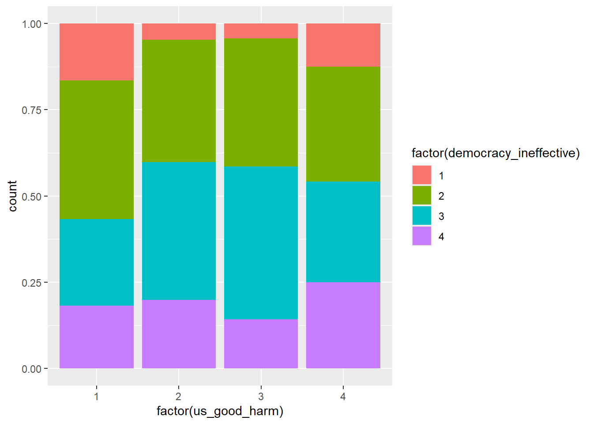
theme_bw()– changes the background themescale_fill_manual–nameto label legend title,valuesto change colors,labelsto change name of levelsscale_x_discrete– adjusts x-axis;labelsto change name of levels;guideto stagger labels to prevent overlappingxlab– x-axis titleylab– y-axis titlegeom_text– adds text annotation
ab_vietnam |>
filter(is.na(democracy_ineffective) == FALSE, is.na(us_good_harm) == FALSE) |> # remove NAs right before the plot
ggplot(aes(fill=factor(democracy_ineffective),x=factor(us_good_harm))) +
geom_bar(position="fill") +
theme_bw()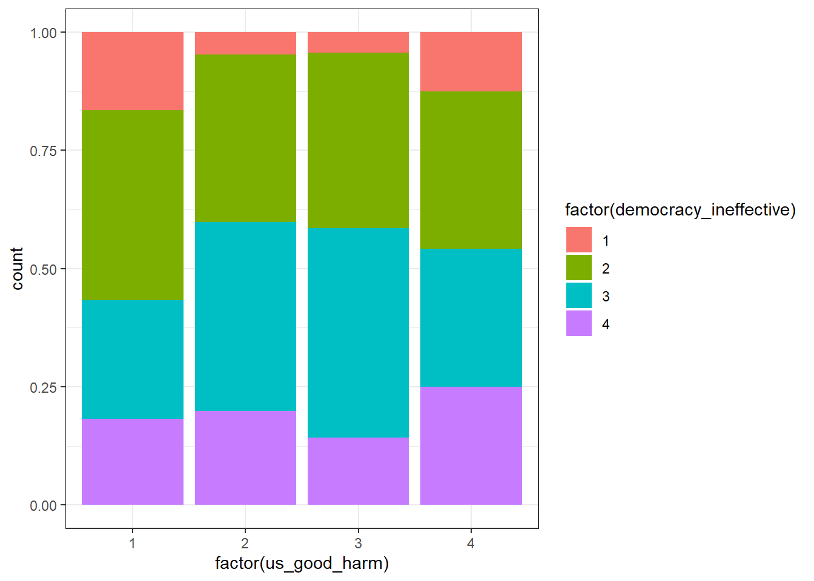
ab_vietnam |>
filter(is.na(democracy_ineffective) == FALSE, is.na(us_good_harm) == FALSE) |> # remove NAs right before the plot
ggplot(aes(fill=factor(democracy_ineffective),x=factor(us_good_harm))) +
geom_bar(position="fill") +
theme_bw() +
scale_fill_manual(name="Q170. Democratic\nsystems are not\neffective", #legend label; `\n` breaks line
values = c("navyblue","blue","skyblue","grey"), #color specification
labels = c("Strongly Agree","Somewhat Agree", "Somewhat Disagree", "Strongly Disagree")) #legend specification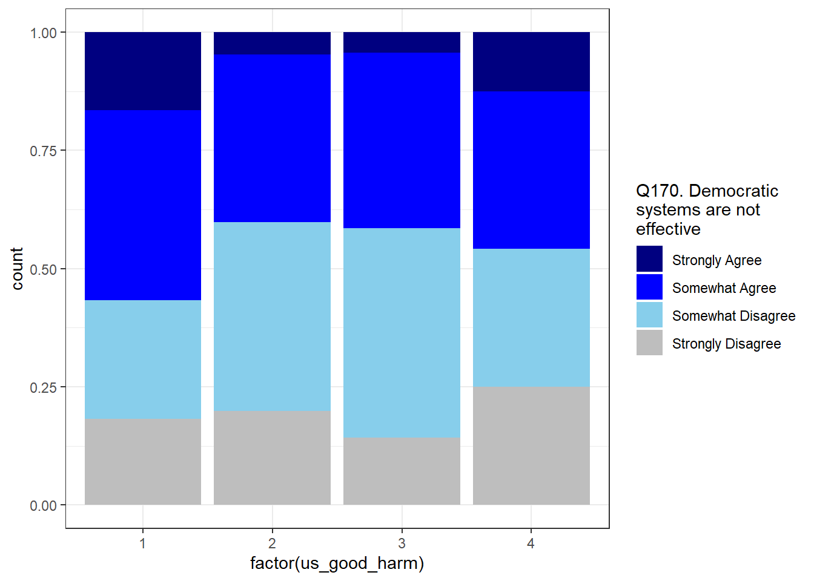
ab_vietnam |>
filter(is.na(democracy_ineffective) == FALSE, is.na(us_good_harm) == FALSE) |> # remove NAs right before the plot
ggplot(aes(fill=factor(democracy_ineffective),x=factor(us_good_harm))) +
geom_bar(position="fill") +
theme_bw() +
scale_fill_manual(name="Q170. Democratic\nsystems are not\neffective", #legend label; `\n` breaks line
values = c("navyblue","blue","skyblue","grey"), #color specification
labels = c("Strongly Agree","Somewhat Agree", "Somewhat Disagree", "Strongly Disagree")) + #legend specification
scale_x_discrete(labels=c("Much more good", "Somewhat more good", "Somewhat more harm", "Much more harm"),
guide = guide_axis(n.dodge=2)) +
xlab("Q175. Does the United States do more good or harm to Asia?") +
ylab("Proportion")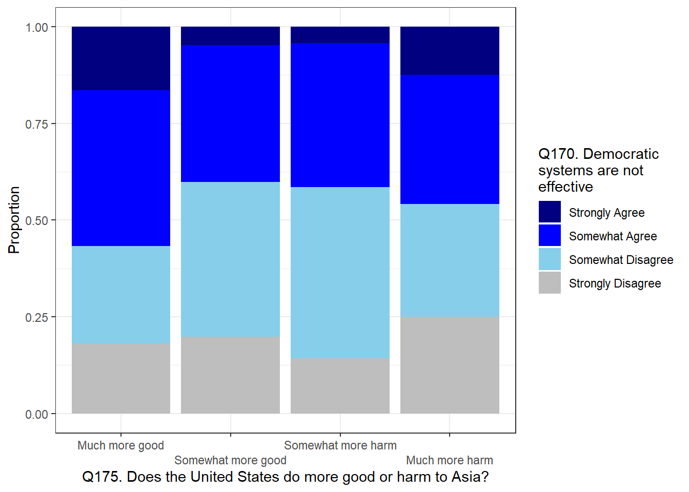
ab_vietnam |>
filter(is.na(democracy_ineffective) == FALSE, is.na(us_good_harm) == FALSE) |> # remove NAs right before the plot
ggplot(aes(fill=factor(democracy_ineffective),x=factor(us_good_harm))) +
geom_bar(position="fill") +
theme_bw() +
scale_fill_manual(name="Q170. Democratic\nsystems are not\neffective", #legend label; `\n` breaks line
values = c("navyblue","blue","skyblue","grey"), #color specification
labels = c("Strongly Agree","Somewhat Agree", "Somewhat Disagree", "Strongly Disagree")) + #legend specification
scale_x_discrete(labels=c("Much more good", "Somewhat more good", "Somewhat more harm", "Much more harm"),
guide = guide_axis(n.dodge=2)) +
xlab("Q175. Does the United States do more good or harm to Asia?") +
ylab("Proportion") +
geom_text(aes(x = factor(us_good_harm), # position along x axis follows us_good_harm
label = round(after_stat(count / tapply(count, x, sum)[x]),3)), # text
stat = "count",
position = position_fill(vjust = .5), # position text at center of each fill block
color="white")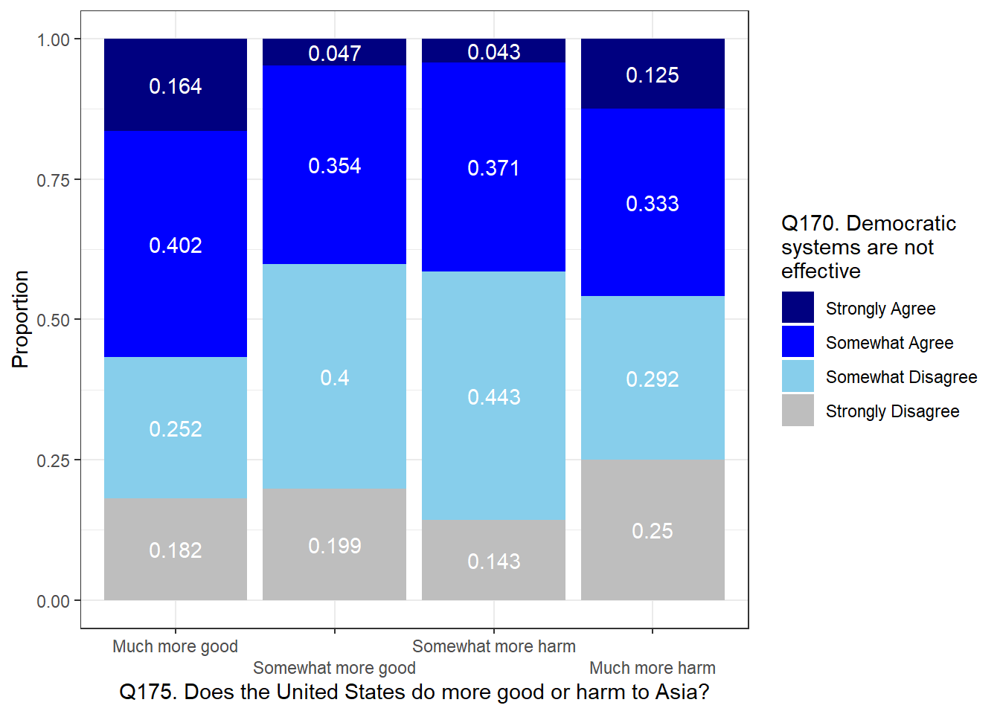
9.3 Box and whiskers plot
Prepare variables (CES)
my_vars <- c("cps25_interest_gen_1","cps25_govt_confusing","cps25_age_in_years") # interest in politics, internal political efficacy and age
ces_selected <- read_dta("Project/CES2025/2025 Canadian Election Study v1.dta") |>
select(all_of(my_vars))
ces_selected <- ces_selected |> # save the new variables in the same data frame
mutate(govt_confusing = if_else(cps25_govt_confusing == 5, # don't know or refused
NA, #if yes
cps25_govt_confusing), #if no
interest_gen = if_else(cps25_interest_gen_1 < 0, # -99 = don't know
NA, #if yes
cps25_interest_gen_1)) #if noces_selected |>
filter(is.na(govt_confusing) == FALSE, is.na(interest_gen) == FALSE) |> # remove NAs right before the plot
ggplot(aes(x=factor(govt_confusing), y=interest_gen)) +
geom_boxplot()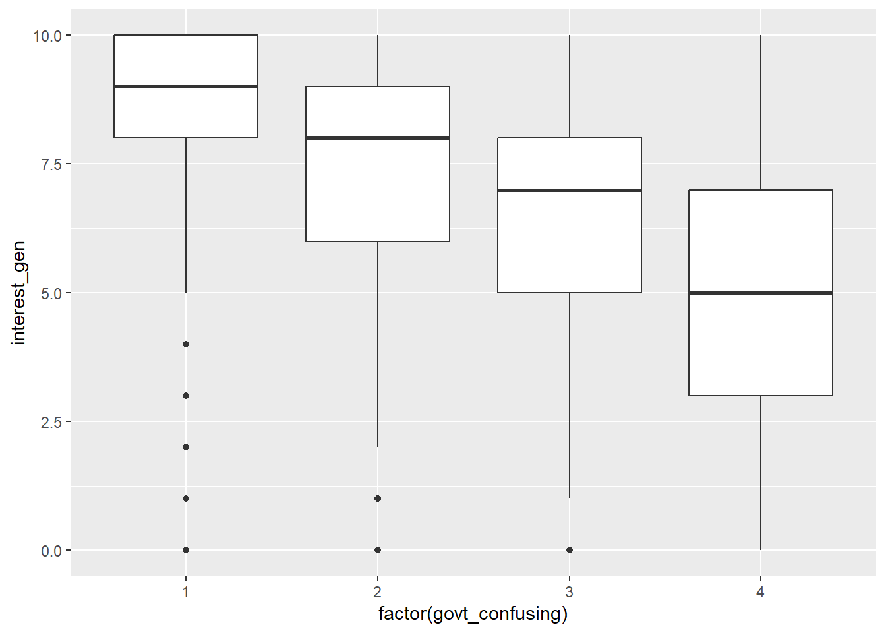
widthingeom_boxplotcontrols the width of the boxplotgeom_point(stat="summary", fun=mean)adds a point plot of the conditional mean in addition to the quartiles noted in the box and whiskers- ggplot shapes for point or scatter
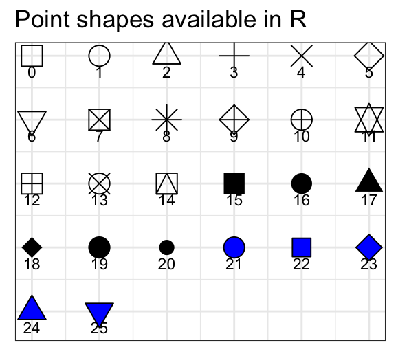
ces_selected |>
filter(is.na(govt_confusing) == FALSE, is.na(interest_gen) == FALSE) |>
ggplot(aes(x=factor(govt_confusing), y=interest_gen)) +
geom_boxplot(width=0.3, fill="darkseagreen") +
geom_point(stat="summary", fun=mean, shape=23, fill="black",size=2.5) +
scale_x_discrete(labels=c("1\nStrongly Disagree","Somewhat Disagree","Somewhat Agree","4\nStrongly Agree")) +
theme_bw() +
xlab("Sometimes, politics and government seem so complicated that a person\n like me can't really understand what's going on.") +
ylab("How interested are you in politics generally?\n(0 = no interest, 10 = a great deal)")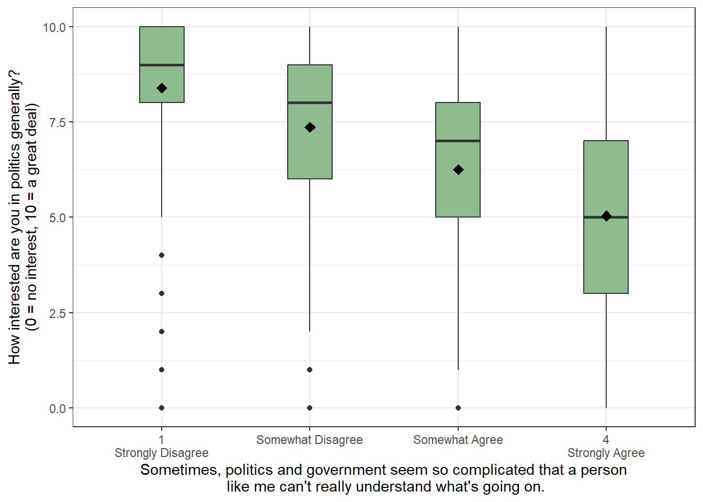
9.4 Scatter plot
Many points: jitter, transparency and hollow circles (CES)
With about 20,000 survey respondents, a plain scatter plot hides most of the data. Everyone with the same age and the same answer sits on the same dot.
ces_selected |>
filter(is.na(interest_gen) == FALSE) |>
ggplot(aes(x=cps25_age_in_years, y=interest_gen)) +
geom_point()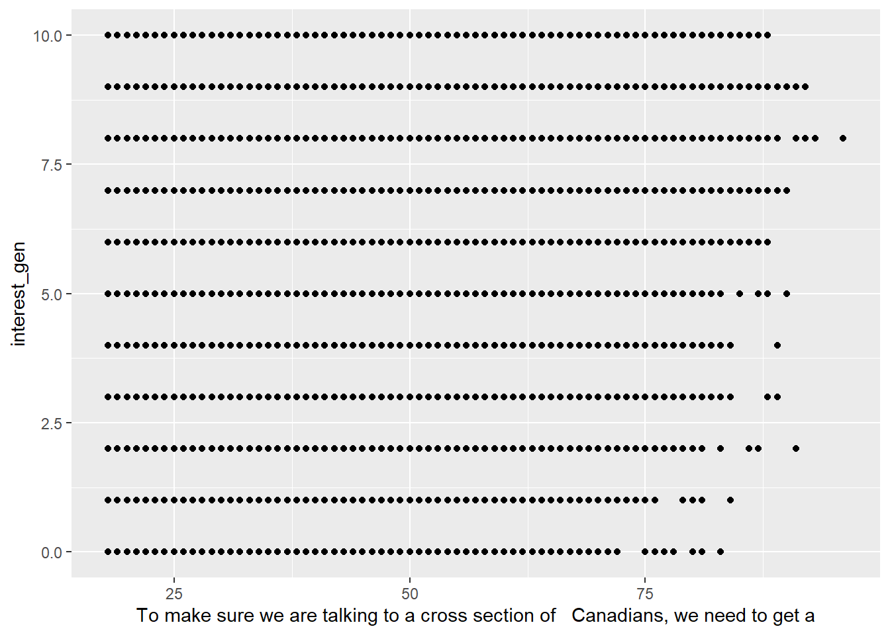
geom_jitter()– moves each point a little at random, so points don’t sit on top of each other;widthandheightset how farshape=1– hollow circles, so overlapping points stay visiblealpha– transparency (0 = invisible, 1 = solid); darker areas have more people
ces_selected |>
filter(is.na(interest_gen) == FALSE) |>
ggplot(aes(x=cps25_age_in_years, y=interest_gen)) +
geom_jitter(width=0.4, height=0.4, shape=1, alpha=0.1) +
theme_classic() +
xlab("Age") +
ylab("How interested are you in politics generally?\n(0 = no interest, 10 = a great deal)")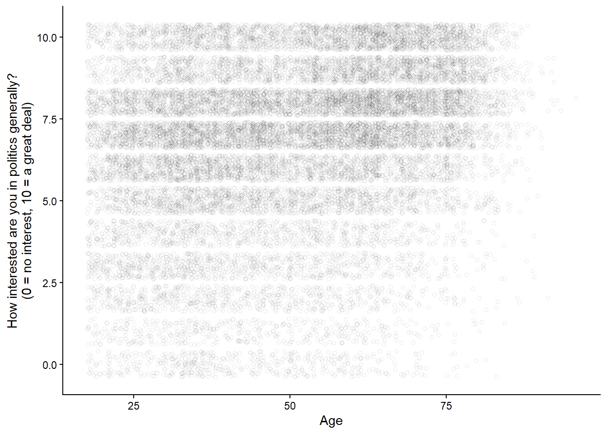
Prepare variables (VDem)
my_vars <- c("country_name", "country_id", "year",
"e_cow_exports","e_gdppc","e_gdp","e_cow_imports","v2x_pubcorr","v2x_regime","e_regionpol_6C")
vdem_selected <- read.csv("Project/VDem/vdem2000_2023.csv") |>
select(all_of(my_vars)) |>
filter(year==2014)
vdem_selected <- vdem_selected |> # save the new variable in the same data frame
mutate(trade = (e_cow_exports+e_cow_imports)/(e_gdp)) # trade volume as proportion of gdp
ggplot(data=vdem_selected,aes(x=trade,y=v2x_pubcorr)) +
geom_point()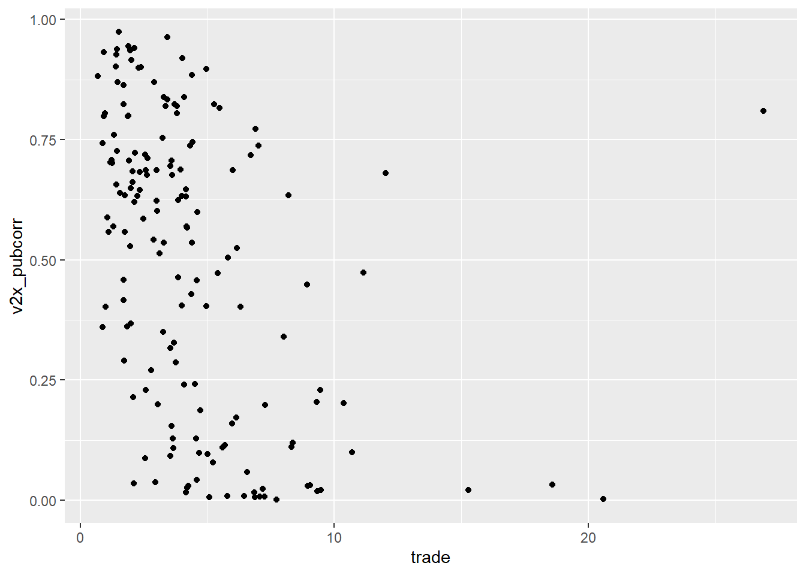
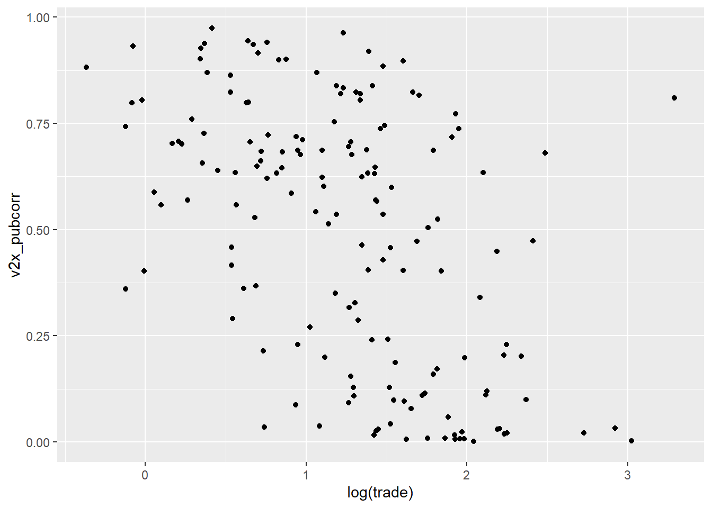
Saving plots using ggsave()
# save as object
trade_plot <- ggplot(data=vdem_selected,aes(x=log(trade),y=v2x_pubcorr)) +
geom_point(alpha=0.8,size=2) +
theme_classic() +
xlab("Trade volume as proportion of GDP (logged)") +
ylab("Public sector corruption")
# use ggsave(): specify `filename`, `plot`, `width` and `height` of image file
ggsave(filename = "trade_plot.png",
plot = trade_plot,
width=8, height=5)9.5 Fancy graphs and options
We keep using the V-Dem data from the scatter plot section.
Reference lines
geom_hline()– a horizontal line atyintercept(geom_vline()is vertical, atxintercept)linetype– e.g."dashed"or"dotted"annotate()– adds a piece of text at thexandyyou choose
ggplot(data=vdem_selected,aes(x=log(trade),y=v2x_pubcorr)) +
geom_point(alpha=0.8,size=2) +
geom_hline(yintercept=mean(vdem_selected$v2x_pubcorr), # average corruption
linetype="dashed", color="red") +
annotate("text", x=3, y=0.53, label="Average corruption", color="red") +
theme_classic() +
xlab("Trade volume as proportion of GDP (logged)") +
ylab("Public sector corruption")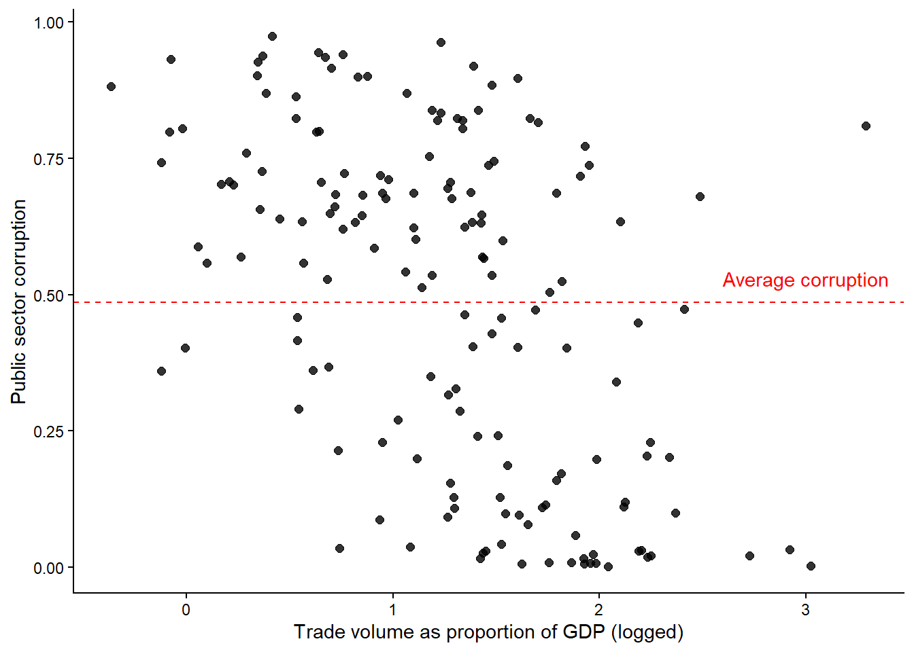
Label some points – geom_text()
Labelling every country would be unreadable, so we label only a few. First make a new variable with the country name for the countries we want, and NA for everyone else. geom_text() leaves out the NAs.
vdem_selected <- vdem_selected |> # save the new variable in the same data frame
mutate(country_label = if_else(country_name == "Canada" | country_name == "United States of America" |
country_name == "China" | country_name == "Singapore" |
country_name == "Russia" | country_name == "Venezuela",
country_name, # if yes: use the country name
NA)) # if no: no labellabel– the variable that holds the textvjust– moves the text up or down, so it doesn’t sit on top of the pointsize– text size
ggplot(data=vdem_selected,aes(x=log(trade),y=v2x_pubcorr)) +
geom_point(alpha=0.8,size=2) +
geom_text(aes(label=country_label), vjust=-1, size=3) +
theme_classic() +
xlab("Trade volume as proportion of GDP (logged)") +
ylab("Public sector corruption")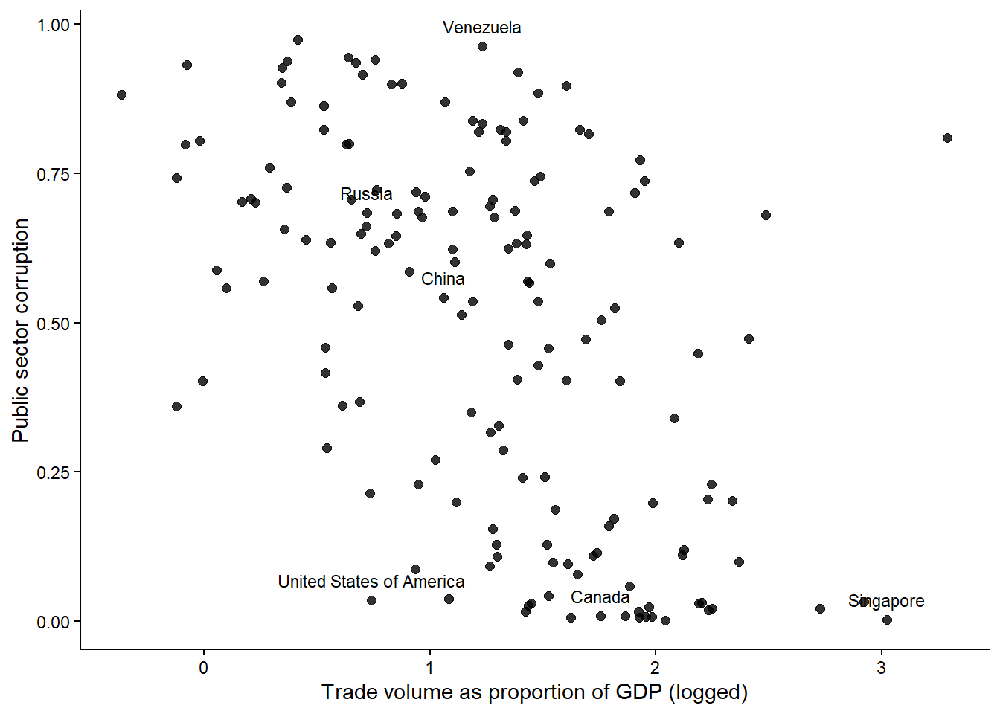
Colour by a continuous variable
Use color inside aes() to add a third variable, and scale_color_gradient() to pick the colours. Here, countries that trade more also tend to be richer.
ggplot(data=vdem_selected,aes(x=log(trade),y=v2x_pubcorr)) +
geom_point(aes(color=log(e_gdppc)),alpha=0.8,size=2) +
theme_classic() +
xlab("Trade volume as proportion of GDP (logged)") +
ylab("Public sector corruption") +
scale_color_gradient(name="GDP per capita (logged)",
low="black",high="red")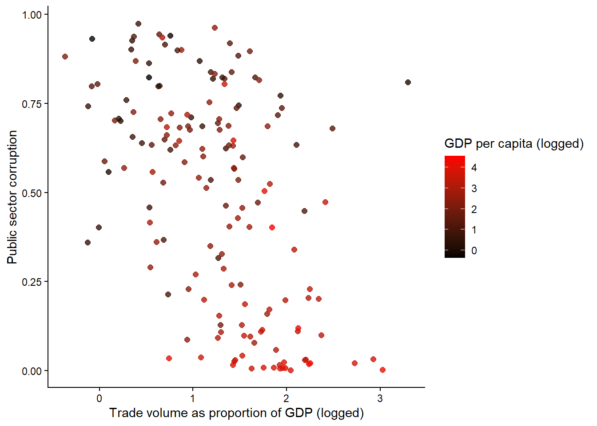
Colour by a categorical variable
GDP per capita is continuous, so we used scale_color_gradient(). For a categorical variable, use factor() and scale_color_manual(), just like scale_fill_manual() in the bar chart.
V-Dem’s regime type (v2x_regime): 0 = closed autocracy, 1 = electoral autocracy, 2 = electoral democracy, 3 = liberal democracy.
ggplot(data=vdem_selected,aes(x=log(trade),y=v2x_pubcorr)) +
geom_point(aes(color=factor(v2x_regime)),alpha=0.8,size=2) +
theme_classic() +
xlab("Trade volume as proportion of GDP (logged)") +
ylab("Public sector corruption") +
scale_color_manual(name="Regime type",
values=c("darkred","orange","skyblue","navyblue"),
labels=c("Closed autocracy","Electoral autocracy","Electoral democracy","Liberal democracy"))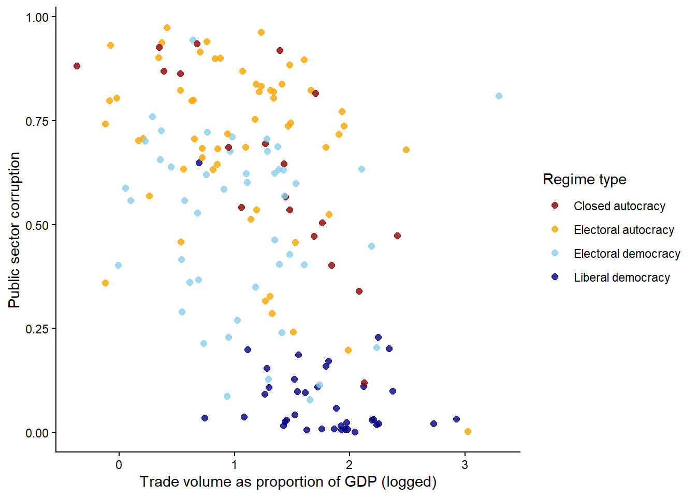
Liberal democracies cluster at the bottom right: high trade and low corruption. Regime type is another variable we would need to control for.
Highlight a group
Draw every country in grey, then draw the group you care about again on top in colour. The second geom_point() gets its own data: only the countries in the group.
V-Dem’s region variable (e_regionpol_6C): 1 = Eastern Europe and Central Asia, 2 = Latin America and the Caribbean, 3 = Middle East and North Africa, 4 = Sub-Saharan Africa, 5 = Western Europe and North America, 6 = Asia and Pacific.
ggplot(data=vdem_selected,aes(x=log(trade),y=v2x_pubcorr)) +
geom_point(color="grey80",size=2) + # all countries
geom_point(data=vdem_selected |> filter(e_regionpol_6C==5), # only Western Europe and North America
color="navyblue",size=2) +
theme_classic() +
xlab("Trade volume as proportion of GDP (logged)") +
ylab("Public sector corruption") +
ggtitle("Western Europe and North America (blue) compared to the rest of the world")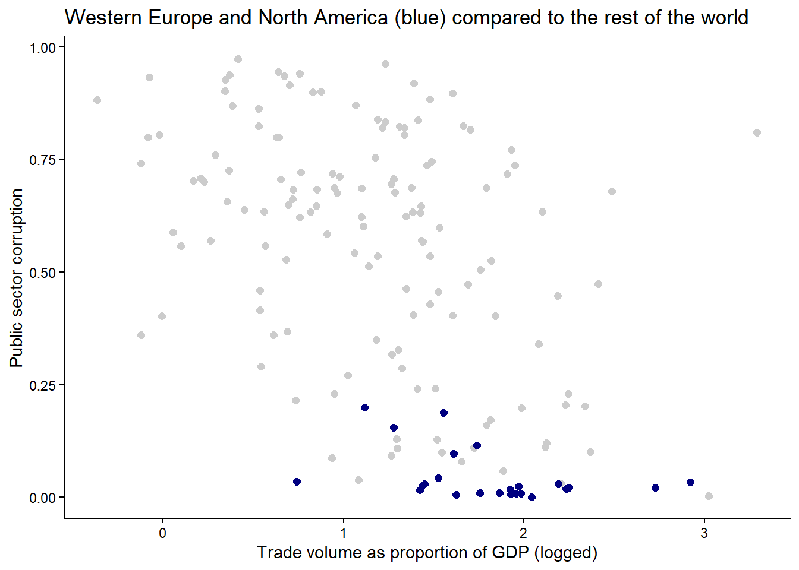
Dumbbell plot
A dumbbell plot shows how something changed between two years: one dot for each year, joined by a line. Here: democracy in Latin America in 2000 and 2023.
vdem_latin_america <- read.csv("Project/VDem/vdem2000_2023.csv") |>
select(country_name, year, v2x_polyarchy, e_regionpol_6C) |>
filter(year == 2000 | year == 2023, # two years
e_regionpol_6C == 2) # Latin America and the Caribbeangeom_line(aes(group=country_name))– joins the two dots for each countrygeom_point(aes(color=factor(year)))– one colour for each year
ggplot(data=vdem_latin_america, aes(x=v2x_polyarchy, y=country_name)) +
geom_line(aes(group=country_name), color="grey60") +
geom_point(aes(color=factor(year)), size=3) +
theme_classic() +
scale_color_manual(name="Year", values=c("grey60","darkred")) +
xlab("Electoral democracy index (0 to 1)") +
ylab("")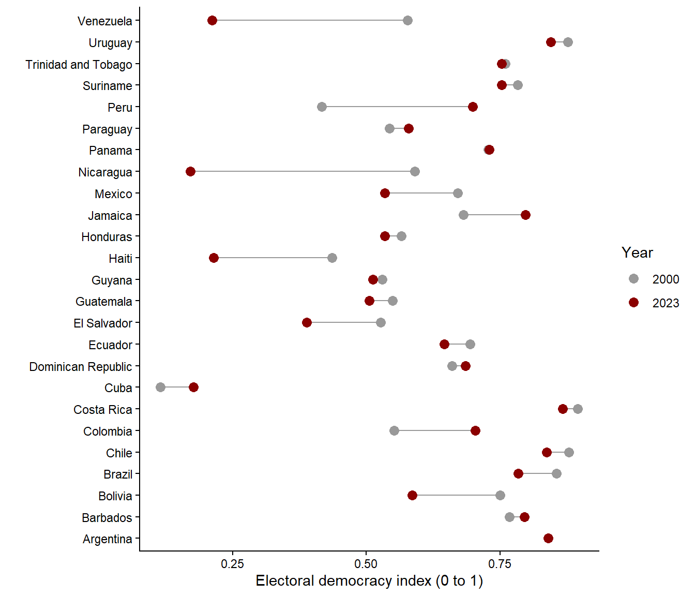
Now interpret: which countries became less democratic? Which became more democratic?
Just for fun: themes and palettes
Other people have made ready-to-use themes and colour palettes. Each one needs a new package. Themes like these are optional: they change how a plot looks, not what it shows.
The Economist – ggthemes
ggthemes copies the style of famous publications, e.g. theme_economist(), theme_wsj() (Wall Street Journal) and theme_fivethirtyeight().
ggplot(data=vdem_selected,aes(x=log(trade),y=v2x_pubcorr)) +
geom_point(aes(color=factor(v2x_regime)),size=2) +
theme_economist() + # instead of theme_classic()
scale_color_economist(name="Regime type",
labels=c("Closed autocracy","Electoral autocracy","Electoral democracy","Liberal democracy")) +
xlab("Trade volume as proportion of GDP (logged)") +
ylab("Public sector corruption")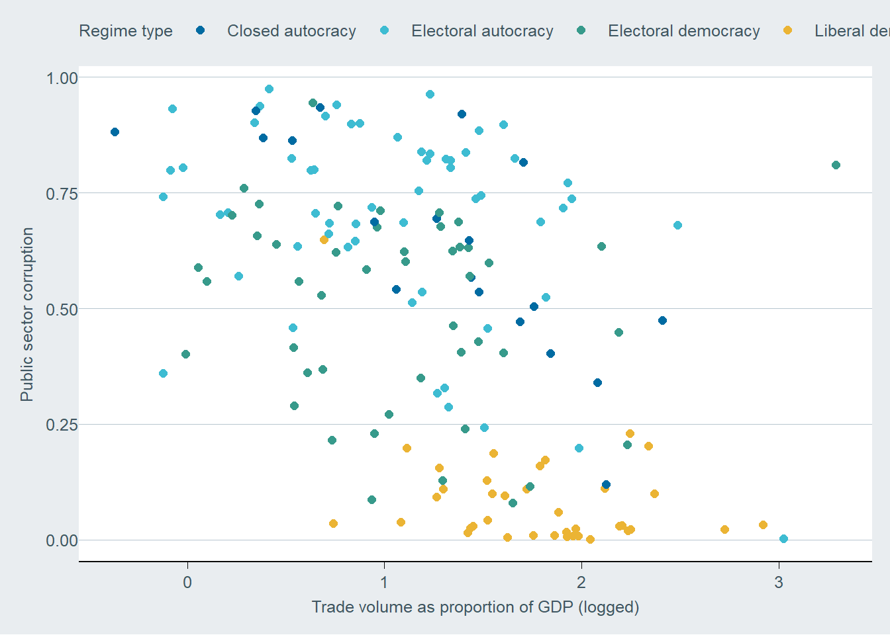
Taylor Swift – taylor
taylor has a colour palette for each Taylor Swift album. Use scale_color_taylor_d() instead of scale_color_manual(), and pick an album.
ggplot(data=vdem_selected,aes(x=log(trade),y=v2x_pubcorr)) +
geom_point(aes(color=factor(v2x_regime)),size=2) +
theme_classic() +
scale_color_taylor_d(album="Lover", # try "folklore", "Midnights", "1989"...
name="Regime type",
labels=c("Closed autocracy","Electoral autocracy","Electoral democracy","Liberal democracy")) +
xlab("Trade volume as proportion of GDP (logged)") +
ylab("Public sector corruption")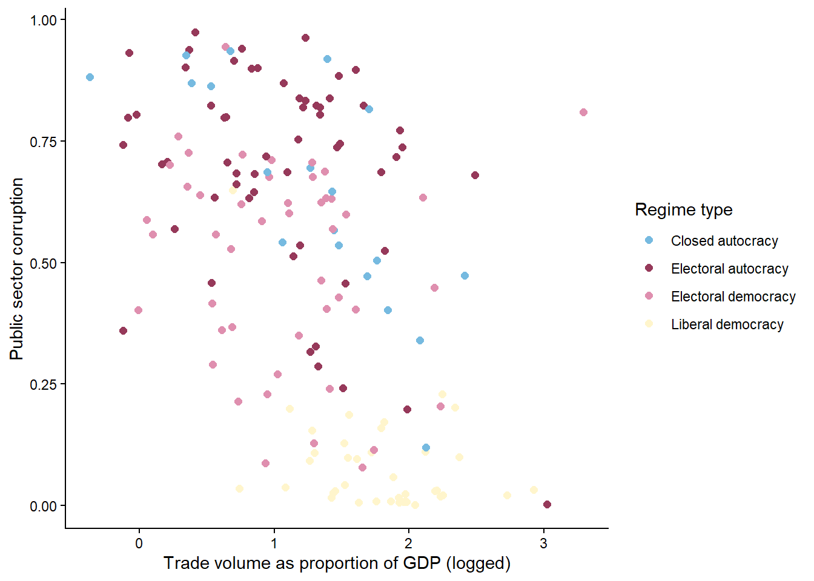
Notice the pale yellow points: they are hard to see on a white background. Fun palettes are not always easy to read.
Cats – ggcats
ggcats replaces the points with cats. It is not on CRAN, so you install it from GitHub with the remotes package.
ggplot(data=vdem_selected |> filter(e_regionpol_6C==5), # Western Europe and North America only
aes(x=log(trade),y=v2x_pubcorr)) +
geom_cat(cat="nyancat", size=3) + # other cats: "pusheen", "grumpy", "toast"...
theme_classic() +
xlab("Trade volume as proportion of GDP (logged)") +
ylab("Public sector corruption")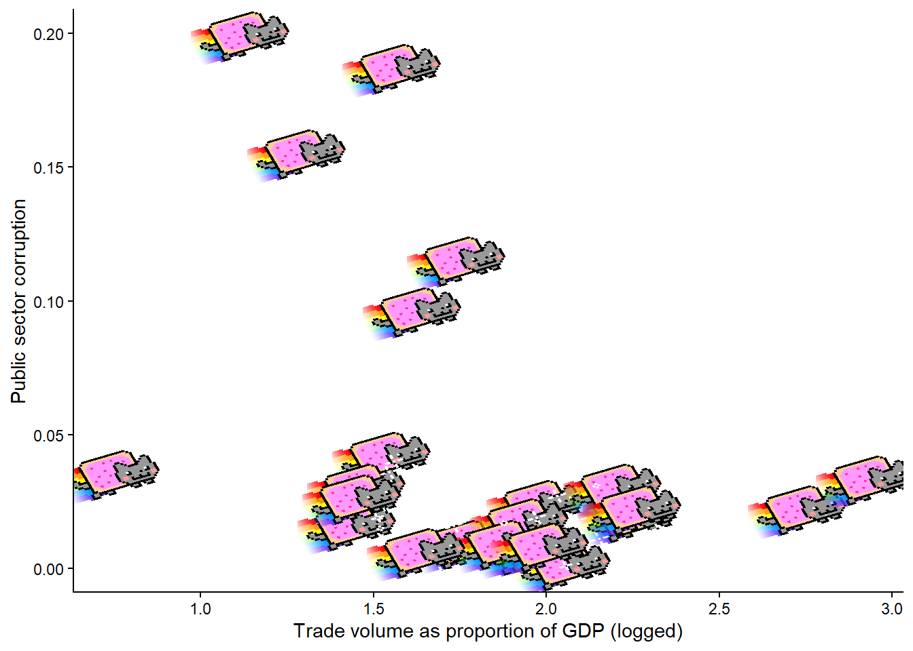
9.6 Optional: Merging data from another dataset
If you want to include data from other data sets, you must receive approval from the TAs or Prof. Besco prior to submission.
In this example, we add the year each country joined the international state system (from the Correlates of War state list) to V-Dem.
Load both datasets
my_vars <- c("country_name", "country_id", "year",
"e_cow_exports","e_gdp","e_cow_imports","v2x_pubcorr")
vdem_selected <- read.csv("Project/VDem/vdem2000_2023.csv") |>
select(all_of(my_vars)) |>
filter(year==2014) |>
mutate(trade = (e_cow_exports+e_cow_imports)/(e_gdp)) # trade volume as proportion of gdpMatch the country codes – countrycode()
Each dataset numbers countries differently. In the Correlates of War (COW) list, Canada is 20. V-Dem uses its own country_id. countrycode() translates COW codes ("cown") into V-Dem codes ("vdem").
cow_states <- cow_states |>
mutate(vdem_id = countrycode(ccode,
origin = "cown",
destination = "vdem"))When you run this, R gives a warning: “Some values were not matched unambiguously: 31, 54, 55, …”
- These are COW codes that have no V-Dem code, for example small states (Bahamas, Monaco) and states that no longer exist (Austria-Hungary, Czechoslovakia).
- Their
vdem_idbecomesNA. Nothing breaks: it is a warning, not an error. - It’s a reminder to check which countries did not match, which we do after the merge.
Keep one row per country
Some countries left the state system and came back, so they have more than one row. We keep the earliest year for each country.
Merge – left_join()
left_join() keeps every row of the first data frame (V-Dem) and adds the matching columns from the second (COW). by says which columns hold the same code.
Check the merge
Always check which rows did not match. Here 5 of 179 countries have no start year: places that are not states in the COW list (Palestine, Somaliland, Hong Kong), and Serbia, whose COW code countrycode() cannot match.
## country_name
## 1 Palestine/West Bank
## 2 Palestine/Gaza
## 3 Somaliland
## 4 Hong Kong
## 5 SerbiaPlot
ggplot(data=vdem_statehood,aes(x=log(trade),y=v2x_pubcorr)) +
geom_point(aes(color=styear),alpha=0.8,size=2) +
theme_classic() +
xlab("Trade volume as proportion of GDP (logged)") +
ylab("Public sector corruption") +
scale_color_gradient(name="First year in state system",
low="black",high="red")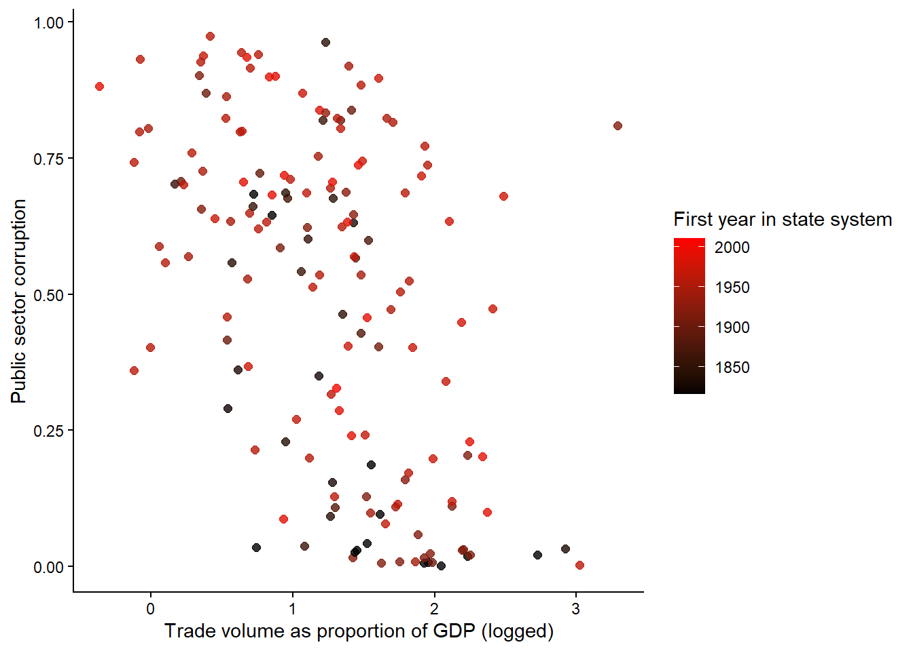
9.7 Credits
- This lesson uses data from
- Asian Barometer Survey, Wave 5. Asian Barometer.
- Stephenson, Laura B., Allison Harell, and Daniel Rubenson. 2025 Canadian Election Study (CES). [dataset]
- Varieties of Democracy (V-Dem) Project. V-Dem Dataset.
- Correlates of War Project. 2024. State System Membership (v2024). COW State System.